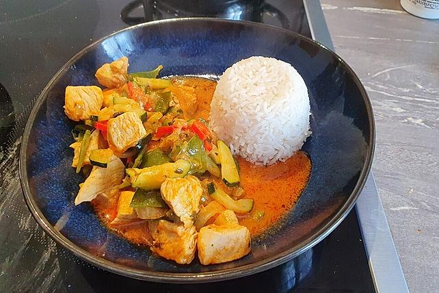

Thai Curry

Dieses Foto zeigt dein fertiges Thai Curry
Zutaten für 2 Portionen
- 200g Pute
- 20g Currypaste
- 200ml Kokosmilch
- 35ml Wasser
- 1/2 Zucchini
- 1/2 Karrote
- 1/2 Zuckerschoten
- 1/2 Zwiebel
- 25g Cashewnüsse
Schritte
- Zuerst die Zuckerschoten für 3 - 4 Minuten blanchieren. Währenddessen das restliche Gemüse klein schnibbeln.
- Das Fleisch anbraten und anschließend die Currypaste dazu geben. Ein paar Minuten kochen und mit dem Wasser ablöschen. Dann nochmals kurz aufkochen lassen und die Kokosmilch dazugeben (lieber anfangs etwas weniger und zum Schluss noch dazu geben, wenn notwendig).
- Dann das Gemüse mit in die Pfanne geben und nochmal für 10 min kochen, bis das Gemüse leicht weich ist. Dann das Thai-Basilikum hinzufügen und mit Zucker, Salz (nicht zu viel) und Pfeffer abschmecken. Kurz vor Schluss noch die Cashewnüsse rein.
- Dazu Reis servieren.
Es ist wichtig, dass richtiges Thai-Basilikum verwendet wird, weil es sehr viel vom Geschmack ausmacht. Ansonsten wird es nicht wie beim Thailänder schmecken.